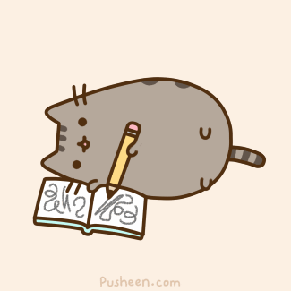

Day 81
Reading
Math
- Review addition and subtraction of fractions with unlike denominators: Complete the first 20 questions (1 through 20) of this worksheet.
- Remember to write and work out the problems in your notebook!
- When you are finished, check your answers against the answer key on the second page.
Words of the Day
Write the three words below in your vocabulary book along with their short definitions. Also, click on the link for each word, and read more about the definition.
- adversary - someone who offers opposition
- aplomb - great coolness and composure under strain
Writing
Make up a story in which a fictional girl accidentally breaks something that belongs to someone else. What does she do as a result? Narrate the action moment by moment.
Art
Make floating letters!

Day 82
Reading
Words of the Day:
Write the two words below in your vocabulary book along with their short definitions. Also, click on the link for each word, and read more about the definition.
Grammar
- Brain Quest, p. 46 All About Animals: Incomplete, compound, and run-on sentences
- Brain Quest, p. 47 Peanut Butter and Jelly: Compound sentences
- Be sure to read the Brain Box on each page before you complete the exercises.
Math
- Review addition and subtraction of fractions with unlike denominators: Complete the last 20 questions (21 through 40) of this worksheet.
- Remember to write and work out the problems in your notebook!
- When you are finished, check your answers against the answer key on the second page.
- Brain Quest, pp. 20203 Fro-yo! - Categorical data (Be sure to read the Brain Box on p. 203.)
Social Studies
- Review (Here we go again): Did you learn the names of all the presidents in order? Watch these videos again to memorize all the presidents!
- New: Learn this song to memorize the 50 states.
Day 83
Reading
- Continue reading Mostly Harmless (1992)
- Brain Quest, pp. 74-75 A Different Side of the Story: Read the story, and answer the questions.
Words of the Day:
Write the two words below in your vocabulary book along with their short definitions. Also, click on the link for each word, and read more about the definition.
- attentive - alert and paying attention
- banish - expel, as if by official decree
Math Review
- Write and work out these review problems in your notebook.
- Do your best, and don't worry! We will review them later in the day.
Grammar
- Brain Quest, p. 48 You Be the Teacher: Circle the mistakes.
- Be sure to read the instructions at the top of the page to see what kinds of mistakes the text might contain.
Day 84
Reading
Words of the Day
Write the two words below in your vocabulary book along with their short definitions. Also, click on the link for each word, and read more about the definition.
- barricade - anything that prevents people or vehicles from getting through
- bluff - a high cliff; a person who is abrupt in manner; to pretend
Math
- In your math book read Ch. 7 Multiplying and Dividing Fractions, pp. 49-50
- In your notebook, answer the questions on p. 51.
- When you are finished, check your answers against those on p. 52.
History / Social Studies
- Read this summary on the US Cabinet.
- Take the ten question quiz on the US Cabinet.
- Pick a president!
- Click on any president's name on this page.
- Using the information that you read, write a short paragraph about his life.
- Example: William Howard Taft, the 27th President of the United States, served as President from 1909 to 1913. A graduate of Yale University, he later went to law school and had his own law practice. He also held many government positions, including Governor of the Philippines. After finishing his second term, Teddy Roosevelt encouraged Taft to run for President. During his term in office, Taft broke up many monopolies and trusts, but some of his polices, such as reducing tariffs on imports, made him unpopular. As a result, he lost the next election to Woodrow Wilson. After leaving office, Taft taught law at Yale. In 1921, he became the only president to serve as a justice on the Supreme Court. He held this office almost until 1930, when he passed away from heart disease.
- NOTE: This page has a typo! Taft is not buried in Arlington National Seminary; someone meant to write Arlington National Cemetery.
Day 85
Reading
- Continue reading Mostly Harmless (1992)
- Brain Quest, pp. 54-55 Energy Sources and Fossil Fuels: Read the text, and answer the questions.
Writing
Write a page on the following topic: Think of something important that happened in your life. It doesn’t have to be earthshaking, but it should be something that has meaning for you. Tell the story of what happened and why it has made a difference to you. Invite your reader into your narrative with vivid details for all senses.
Words of the Day
Write the two words below in your vocabulary book along with their short definitions. Also, click on the link for each word, and read more about the definition.
- brackish - slightly salty; unpleasant and harsh
- brandish - move or swing back and forth
Math
Some fraction wrap-up and Roman numerals!
- Play this fraction game.
- Login information is in your notebook.
- Try this math challenge. Do your best, and don't worry if you think you're getting it wrong! I will review it with you at the end of the day.
- Complete this worksheet on Roman numerals.
Science
- Watch these videos:
- In your science book, read Chapter 16: Electricity and Magnetism, pp. 159-172.
- Answer the questions on p. 173, and check your answers against those on p. 174.